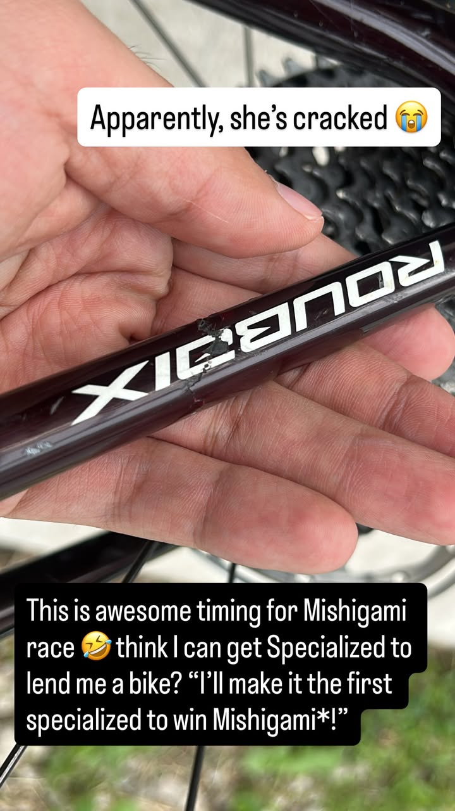
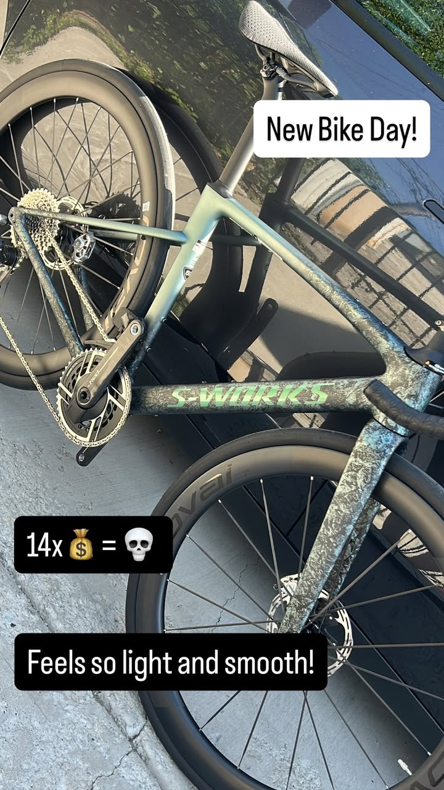
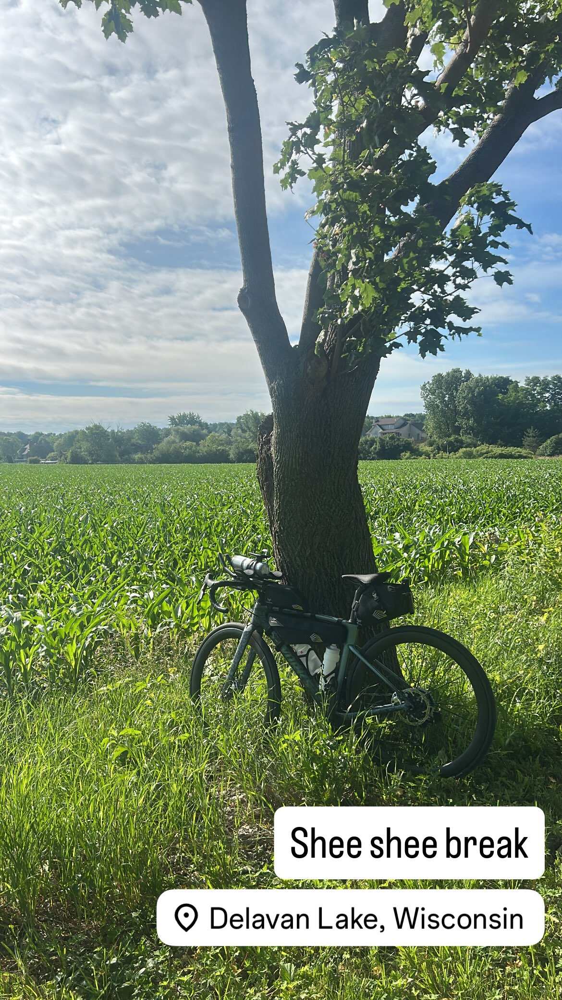
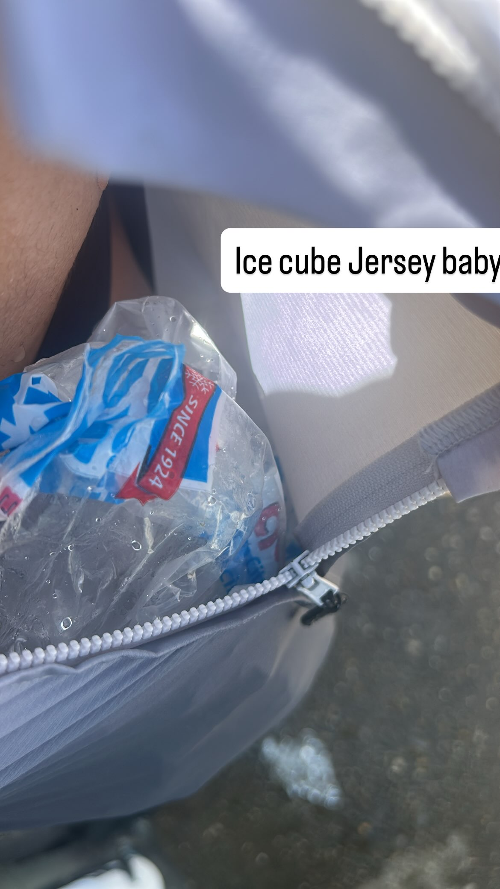
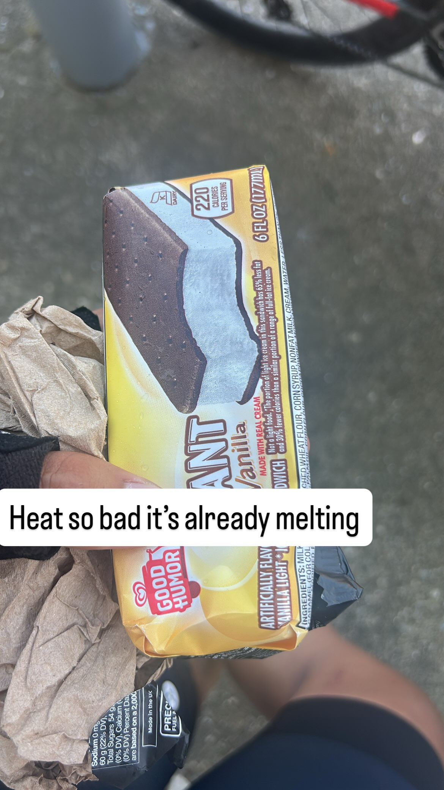
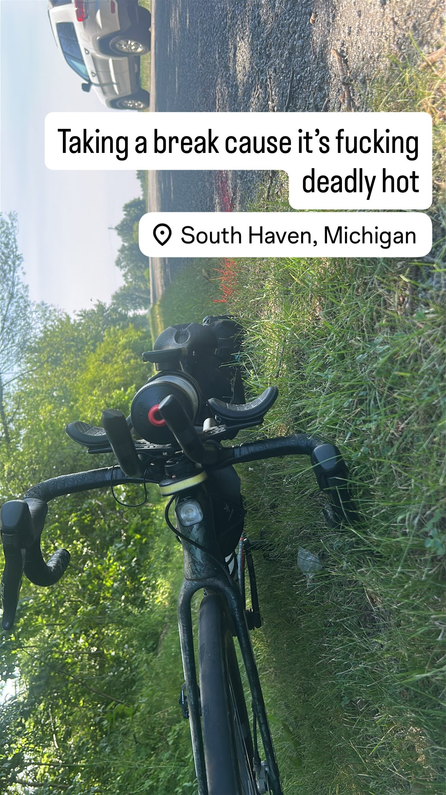
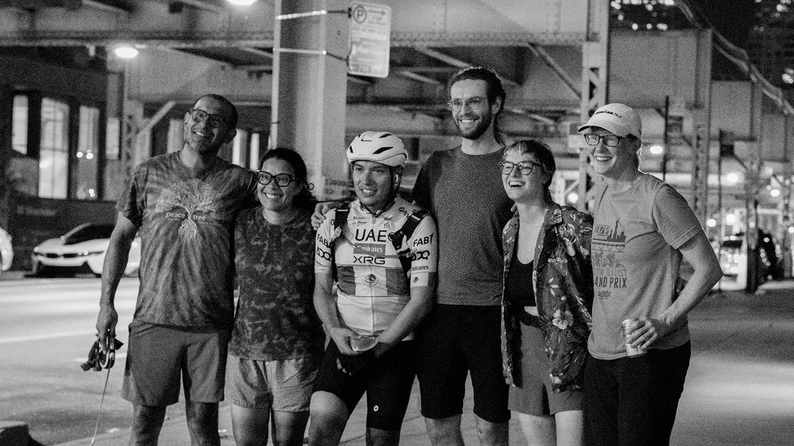
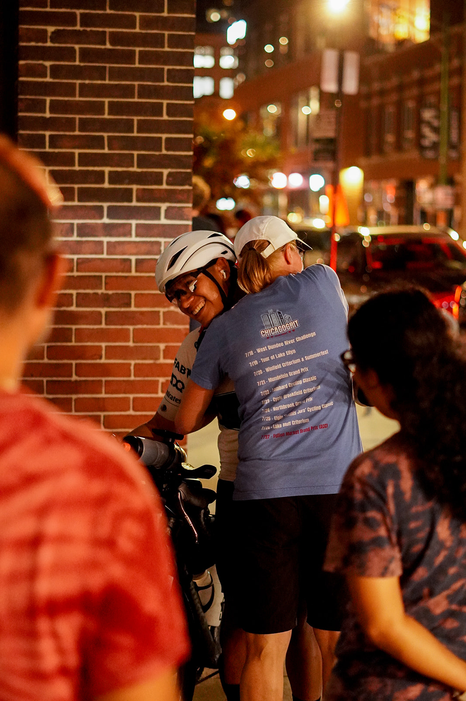
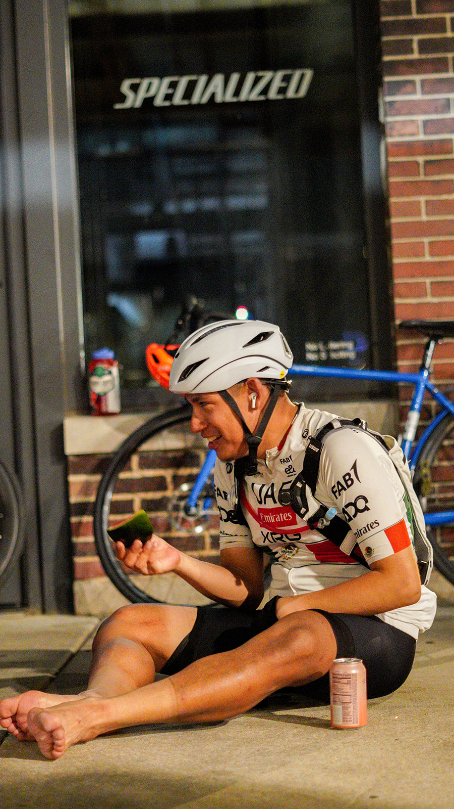

A race recap: 1,121 miles around Lake Michigan—the year a broken frame, a swollen foot, and a Sunday morning meltdown almost ended the streak, and how I finished anyway.
Coming off a 2nd-place finish in 2025 (read my 2025 recap), I returned to Mishigami with a bigger target on my back and a bigger question mark over my prep.
I finally added structure to my training—an indoor trainer, a real FTP number, actual workouts instead of pure feel—but a late bike purchase and a broken-frame fiasco ate weeks I could not get back. I arrived at the start line less ready than I wanted, but more competitive than I had ever been.
I almost quit at mile 390. Then I rode 731 more miles.
Mile 0 to 1 was a neutral rollout, the usual shuffle of riders figuring out where they belonged. I knew from 2025 that plenty of people would go too hard too early, so I played a few mind games: push the pace when someone got close, ease off just enough to let them take the lead, then sit close enough that they'd hear my loud wheel hub and try to drop me—never realizing the early lights and crossings make dropping anyone nearly impossible.
The neutral rollout.
What I did not expect was ending up at the very front of the entire field. My mind games were suddenly being played on genuinely strong riders.
That's where I met Dylan Pearce, Jesse Reeves, and Austin Denton. Jesse came in with a serious ultra resume. Dylan had just circumnavigated Lake Ontario and had power numbers I could not imagine holding. Austin had Doom and several strong ultras behind him.
It felt like my own Tour de France parody: Tadej pulling insane watts, Vingegaard staying close, Isaac del Toro hanging on with raw talent. I was Isaac—Mexican, scrappy, and very aware that my ultra portfolio was tiny compared to theirs.
By Milwaukee, I knew I could not hold their pace. So I leaned into what I actually am: a late-game cyclist. I come alive when fatigue, sleep management, and stubbornness start deciding things.
I beat Dylan to the BP station—my last time seeing him—and immediately lost that advantage to my own inefficiency. My hydration-mix routine took 15–20 minutes instead of the 7–10 I had budgeted. Next year: carry less.
Indoor training finally gave me a winter base. Zwift exposed a mash-and-coast pedal stroke I did not know I had, and structured tempo/Z2 work smoothed it out. My FTP nudged from 251w to 271w—small but meaningful.
I also cut caffeine two weeks out, which was harder than expected for a Diet Coke addict. Caffeine-free Diet Coke, Orange Fanta, Sprite, and 7-Up became my rotation. Mountain Dew turned out to be incredible race fuel—480 calories and 130g of carbs per liter—but with 152mg of caffeine, it had to be timed carefully.

The cracked frame that kicked off the whole equipment scramble.

New bike on Jun 22—only 19 days before the Jul 11 start.

The only fully-loaded long test ride I could fit in.
Clip from my 2025 finish where the same chain-stay crack is already visible. Photo credit: @mishigamichallenge. Watch the clip on Instagram.
The broken frame fiasco cost me the most. A 21-day bearing replacement, a late bike purchase, and almost no runway to dial in my fit meant I entered the race with a setup I did not fully trust. I never found a comfortable cadence. I never found a comfortable foot position. And I carried more sleep debt than I realized—nearly 30 hours of nonstop prep in the two days before the race.
I learned the crack was in the chain-stay area. Looking back at a clip from my 2025 Mishigami finish, you can see that exact same crack in the video. Basically, the bike was a total trooper last year.
Race-day setup with the reflective stickers in place.
By race morning, the setup looked dialed from a distance, but the compressed timeline left too little time to validate comfort under fatigue.
The goofy-but-functional setup: warm layers in a Ziploc, carried in the front of my jersey. Photo credit: @mixed.soil.media.
I also made a last-minute packing compromise: with so little space left in my bags, I could not fit my warmer night layers. I stuffed them into a Ziploc and carried the bundle in the front of my jersey. It looked goofy, and the breathability hit was real, but it got me to the start line with what I needed.
Wind preview from my race plan. Explore the full plan here.
Unlike 2025's tailwind, this year brought a mild headwind all day, with the only real tailwind coming east into St. Ignace.
Mile 200 at a Kwik Trip in Two Rivers, new pain showed up: foot pain in both feet and a lower-back ache I had never felt before. Having last year's race in my legs meant I knew exactly what should hurt and when. This was not that.
Can I fix this? And if not, can I survive 900 more miles of it?
I did not see another rider past mile 200. Eventually, I'd have an 18-hour-and-19-minute cushion over 4th place. I pushed another 100 miles hoping the extended break—shoes off, feet up—would help.
It did not.
Mile 309: shoes off and feet up during the extended break.
Mile 309 Marinette. The foot pain was unbearable. I took an extended break and a power nap, still avoiding caffeine this early.
A memory kept resurfacing: a 600k training ride I cut short after a Coros navigation issue. The “give up” moment replayed in my head.
Am I weaker mentally than last year? Am I a quitter?
I woke from the nap feeling sick—shortness of breath, dry cough, runny nose, mild fever. I took ibuprofen and kept going for another five hours.
At 7am Sunday, I texted my mom: Estoy cansado. (I am tired.) Forty minutes later: Creo que voy a parar. (I think I'm going to stop.) That had never happened before. In every previous endurance effort, no matter how bad it got, I never sent that text.
Mile 390 I cracked. Frustrated, hopeless, barely a third of the way through, I felt like months of preparation were unraveling because of a bike I never had time to properly fit. I cried while riding next to cars that would not pass.
Mile 401 a Holiday station. I looked up every way home: a $2,000 Uber, no rental cars, a train leaving the next morning.
At 8:49am I posted in the Chicago Randonneurs Slack asking how to get back to Chicago from Gladstone, hiding how defeated I felt behind emojis. Kim Carlson, Jay Ready, Phil Fox, and Sarah Rice wrote back with encouragement. There was no race pressure—Dylan, Jesse, and Austin were 30–50 miles ahead, and the nearest chaser was 70 miles behind. Somehow, that made the decision harder.
At 9:29am, I posted again:
I'm gonna do it for y'all. It ain't gonna be pretty or even quick but it'll get done.
The reset: dumping chews and simplifying the plan.
I decided to finish. Full stop.
I made three changes:
The aftermath of the first storm, soaked gear and feeling cold.
Around mile 500, a tailwind made 20 miles feel effortless—until an unforecast storm caught me around mile 495 and soaked me for an hour in the 50-mile dead zone between Engadine and Rudyard.
Mile 529.5 two dogs—Lab/pitbull mixes—started chasing on a 4–8% grade. Over 500 miles in, I could not outsprint them. I got off the bike, used it as a shield, and used a water bottle to create space until they eased off after about 20 minutes.
Initial dog encounter while pedaling up the grade.
Off the bike, using it as a shield to create space.
At the next gas station, I noticed my hydration mix bag had a puncture. The rain had also washed out my chain's hot wax, so I relubed with Silca Synergetic.
Watching the front from a distance, I saw Dylan and Jesse resting in Mackinaw City while Austin closed the gap and passed both. Dylan woke an hour later and started chasing. Jesse did not stir until another hour later.
Second storm: darkness, lightning, and soaked roads before the hotel stop.
Mile 576–624 brought absolute darkness, steep grades, lightning, and more rain. Heading into Harbor Springs, with rain expected for another hour and no sunlight for four more, I made the call to stop at a hotel.
The Colonial Inn cost $365 plus tax—steep, but cheaper than any way home.
I washed my kit, took a hot shower, worked my feet over, and slept three hours timed to let the rain pass and catch breakfast.
Late-night trail karaoke on the Hart-Montague stretch. Jam of the night: "Baile Inolvidable" by Bad Bunny.
Monday's wind came from the west and south—straight into the hilly section ahead of the heat. The hotel rest bought me six pain-free hours before the mental battle resumed.
My phone's charging port had been damaged by the rain and kept cutting out. I needed it to locate the remaining gas stations, two of which required slight detours. I planned to shut it off once it hit 10%.
To manage the foot pain, I alternated between David Goggins speeches and bachata/salsa—an extremely chaotic soundtrack for a 1,100-mile bike race. The jam of the night was "Baile Inolvidable" by Bad Bunny. The music carried me through the 34-mile stretch from the William Field Memorial Hart-Montague Trail into Muskegon: late-night trail karaoke.
Around Jesse's mile 800, I noticed his tracker dot had wandered off course. At mile 823, it stopped entirely. Shortly after, his status flipped to DNF.
Dirty legs after the Hart-Montague Trail.
Mile 892 the hydration mix puncture had worsened, turning my saddle bag into a sticky mess and ruining my lube. I threw out the remaining 2–3 pounds of mix and switched to gas-station hydration like in 2025. That also finally freed jersey space, so I could stop carrying the bulky Ziploc warm-layer stash up front and breathe normally again. The bike immediately felt easier to handle.
A power nap by William Ferry Park, mile 910. Photo credit: @mishigamichallenge. See the photo collection for all the extra angles.
Mile 910 a power nap by William Ferry Park. It was the perfect nap opportunity: just enough shade to let me snooze, but still warm enough to recover from the chilly night riding. My radar sensor buzzed the whole time, and I somehow slept through it. Thankfully, I did not sleep through my alarm. I woke up and saw Jack Peck nearby, and I had no idea how many different angles he was capturing.
Mile 990 temperatures in the high 90s on long, exposed roads—the same stretch that broke me in 2025. Somewhere in that stretch, baking on the pavement, I seriously considered just stopping and waiting out the heat until sunset. For a few minutes that felt like the smart move. But the racing brain wouldn't let it go: I was still on pace for a PR, and sitting still wasn't going to make the heat any less real. This time I stayed cautious, stopping to eat three chew bars and cool down before Benton Harbor, where two ice cream sandwiches, a Gatorade, and a 7-pound bag of ice went into my bottles, bladder, and jersey.

Ice in the jersey to keep core temp down.

The melting-sandwich moment in Benton Harbor.

Benton Harbor reset before the final push.
Near-miss at the I-90 on-ramp around mile 1,010.
Mile 1,010 I nearly rode onto the I-90 on-ramp before catching it and U-turning away. With so much highway-adjacent riding on this route, I did not immediately realize I was on the wrong road. I only figured it out when I caught a glimpse of the correct road through the bushes.
Mile 1,022 I made the mistake of taking my shoes off on blazing hot pavement.
Mile 1,035–1,043 an extended search for an unlocked porta-potty. Ironically relevant: a hospice nurse shaming an Amazon delivery driver for using a porta-potty.
Mile 1,050 my final gas station stop.
The last 36 miles on the bumpy Oak Savannah Trail felt endless—chicanes taken a little too fast, a close call with a downed tree—before I hit my favorite stretch of the course, the Lakefront Trail, with a tailwind and a few races against electric Divvy bikes.
Lakefront Trail at night. Photo credit: @mixed.soil.media.
I rolled in at 10:19pm, finishing in 3 days, 16 hours, 19 minutes, greeted by Sarah Rice, Jack Peck, and a group of Chicago Randonneurs.

Finish-line moment with Chicago Randonneurs friends. Photo credit: @mixed.soil.media.

At the finish with Sarah Rice. Photo credit: @mixed.soil.media.

Post-finish collapse, mission complete. Photo credit: @mixed.soil.media.
Sarah had followed my Slack updates through the worst of it and kept me talking even when I was ready to quit—an offer to help me get home that I will never forget, even though I did not take it.
The first ever Mishigami podium pic! Taken the very next day. I got to meet and chat with Dylan and Austin. They are tall lol Photo credit: @mishigamichallenge and @mixed.soil.media.
Finishing 3rd against that field should have felt like an unambiguous win. Instead, it did not—at least not at first.
Jesse Reeves had been putting on a masterclass all race before Shermer's neck forced him to scratch at mile 823. I moved into the final podium spot because of it, and for a long stretch—until around mile 1,050—it felt less like something I earned and more like something I inherited.
Two things changed that. First, I had my own race to survive. From mile 200 onward, I was dealing with real pain, and by mile 300 I'd come close enough to quitting that finishing was never guaranteed. Every mile after that had to be earned.
Second, ultra-endurance racing is a contest of who can manage the limits of the body. Everyone eventually meets theirs. Shermer's neck was not Jesse's bad luck—it was his limit, the same way the pain in my feet was mine. His race ending at mile 823 did not make mine any shorter; I still had nearly 300 miles of headwind, heat, and worsening foot pain ahead of me.
The podium was not given. I rode all 1,121 miles to get there.
Left: My longest climb ever (same one as last year). Right: My infamous 18th Street Pedestrian Bridge, where I completed Everest and Everest Roam.
I'm still the only Chicagoan to finish this course in under four days—twice now. The closest anyone else from Chicago has come is Sarah Rice, just 9 hours shy of that mark. Sub-four-days is rare across the entire field, too: it's only been done 6 times ever, and 2 of those are mine. The hilly section seems to be where whatever advantage flatland pacing gives you finally runs out—it's telling that the closest Chicagoan is still the better part of a workday behind. Despite the physical fight, I cut 3 hours 16 minutes off my 2025 time, in conditions that were considerably tougher than last year—a headwind and extreme heat on day three that weren't there before.
The field this year was as strong as it has ever been: the gap between the top four or five riders, before Jesse scratched, was over 18 hours—a massive spread compared to last year's 10-hour gap between 3rd and 4th, which highlights how competitive the front of the race has become.
Even on a course that rewards raw watts, I held my own. Looking at w/kg across the full race, based on the average power I sustained from start to finish, I was surprisingly close to the front of the field—suggesting that the fitness gains from winter training and smoothing out my pedal stroke actually mattered. Austin, who finished second, averaged a slower moving speed than I did, but spent more total time pedaling because I had to stop and rest my feet more than I would have liked. In the end, his ability to keep moving and limit those interruptions made the difference. Props to him— that endurance was earned.
I set new PRs across the board:
Most of all, I fought a real mental battle and won it. Knowing exactly what should hurt and when, from last year's race, I knew mile 200 was too early for the pain I was in—and I pushed through another 900 miles anyway.
To Kim Carlson, Jay Ready, Phil Fox, and Sarah Rice, for the Slack messages that talked me off the ledge at mile 401.
To Sarah especially, for following along through the worst of it and never letting the offer to bail me out feel like anything but genuine care.
To Jack Peck and the rest of the Chicago Randonneurs—Elliot, Priyanka, Jose, and everyone else—for making a late-night arrival feel like it mattered.
To the media crews—Aaron, Monica, and their gallery, Victor, Cody, and Jack—for capturing the miles nobody else sees.
Watch my race highlight on Instagram: Instagram highlight reel.
For more coverage and race photos, check out the Midwest Ultra Cycling site!
How it started. Photo credit: Victor.
How it ended. Photo credit: Mixed Soil Media.
Check out this cool edit by Mixed Soil Media—totally not biased! (Okay, maybe a little, since it highlights my Lakefront Trail riding 😂)
After finishing and getting some rest, I came back when I could to cheer on the other riders and film their final roll-ins. Here are a few of those moments. I live a bit far away, but it felt meaningful to be there for them and share in their finishes.
Maybe third time's the charm—and next year I finally snag 1st to complete the trifecta: 2nd, 3rd, and 1st.
Is it likely? Probably not, with the field getting faster every year and Justin likely returning for his FKT. But hey... maybe I'm next. Sub-3 days?!?
See you all at the 2027 Mishigami Challenge.
{kind=link}
{kind=link}
{kind=link}
{kind=link}
{kind=link}
{kind=link}
{kind=link}
{kind=link}
{kind=link}
{kind=link}
{kind=link}
{kind=link}
{kind=link}
{kind=link}
{kind=link}
{kind=link}
{kind=link}
{kind=link}
{kind=link}
{kind=link}
{kind=link}
{kind=link}
{kind=link}
{kind=link}